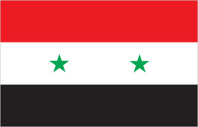
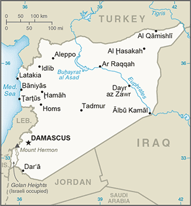
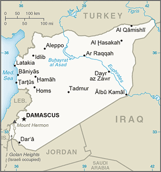
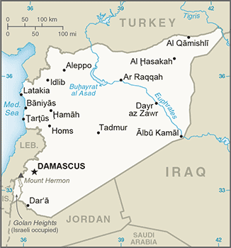

 


Middle East :: SYRIA
Introduction :: SYRIA
-
Following World War I, France acquired a mandate over the northern portion of the former Ottoman Empire province of Syria. The French administered the area as Syria until granting it independence in 1946. The new country lacked political stability and experienced a series of military coups. Syria united with Egypt in February 1958 to form the United Arab Republic. In September 1961, the two entities separated, and the Syrian Arab Republic was reestablished. In the 1967 Arab-Israeli War, Syria lost the Golan Heights region to Israel. During the 1990s, Syria and Israel held occasional, albeit unsuccessful, peace talks over its return. In November 1970, Hafiz al-ASAD, a member of the socialist Ba'th Party and the minority Alawi sect, seized power in a bloodless coup and brought political stability to the country. Following the death of President Hafiz al-ASAD, his son, Bashar al-ASAD, was approved as president by popular referendum in July 2000. Syrian troops - stationed in Lebanon since 1976 in an ostensible peacekeeping role - were withdrawn in April 2005. During the July-August 2006 conflict between Israel and Hizballah, Syria placed its military forces on alert but did not intervene directly on behalf of its ally Hizballah. In May 2007, Bashar al-ASAD's second term as president was approved by popular referendum.Influenced by major uprisings that began elsewhere in the region, and compounded by additional social and economic factors, antigovernment protests broke out first in the southern province of Dar'a in March 2011 with protesters calling for the repeal of the restrictive Emergency Law allowing arrests without charge, the legalization of political parties, and the removal of corrupt local officials. Demonstrations and violent unrest spread across Syria with the size and intensity of protests fluctuating. The government responded to unrest with a mix of concessions - including the repeal of the Emergency Law, new laws permitting new political parties, and liberalizing local and national elections - and with military force and detentions. The government's ongoing violence to quell unrest and widespread armed opposition activity has led to extended clashes between government forces, their allies, and oppositionists. International pressure on the ASAD regime has intensified since late 2011, as the Arab League, the EU, Turkey, and the US expanded economic sanctions against the regime and those entities that support it. In December 2012, the Syrian National Coalition, was recognized by more than 130 countries as the sole legitimate representative of the Syrian people. Political negotiations between the government and opposition delegations at the UN-sponsored Geneva II conference in 2014 and the UN-sponsored Geneva III talks in 2016 failed to produce a resolution of the conflict. Unrest continues in Syria, and according to an April 2016 UN estimate, the death toll among Syrian Government forces, opposition forces, and civilians was over 400,000. As of December 2016, approximately 13.5 million people were in need of humanitarian assistance in Syria, with 6.3 million people displaced internally, and an additional 4.8 million Syrian refugees, making the Syrian situation the largest humanitarian crisis worldwide.
Geography :: SYRIA
-
Middle East, bordering the Mediterranean Sea, between Lebanon and Turkey35 00 N, 38 00 EMiddle Easttotal: 185,180 sq kmland: 183,630 sq kmwater: 1,550 sq kmnote: includes 1,295 sq km of Israeli-occupied territorycountry comparison to the world: 90slightly more than 1.5 times the size of Pennsylvaniatotal: 2,363 kmborder countries (5): Iraq 599 km, Israel 83 km, Jordan 379 km, Lebanon 403 km, Turkey 899 km193 kmterritorial sea: 12 nmcontiguous zone: 24 nmmostly desert; hot, dry, sunny summers (June to August) and mild, rainy winters (December to February) along coast; cold weather with snow or sleet periodically in Damascusprimarily semiarid and desert plateau; narrow coastal plain; mountains in westmean elevation: 514 melevation extremes: lowest point: unnamed location near Lake Tiberias -208 mhighest point: Mount Hermon (Jabal a-Shayk) 2,814 mpetroleum, phosphates, chrome and manganese ores, asphalt, iron ore, rock salt, marble, gypsum, hydropoweragricultural land: 75.8%arable land 25.4%; permanent crops 5.8%; permanent pasture 44.6%forest: 2.7%other: 21.5% (2011 est.)14,280 sq km (2012)significant population density along the Mediterranean coast; larger concentrations found in the major cities of Damascus, Aleppo (the country's largest city), and Hims (Homs); more than half of the population lives in the coastal plain, the province of Halab, and the Euphrates River valleynote: the ongoing civil war has altered the population distributiondust storms, sandstormsvolcanism: Syria's two historically active volcanoes, Es Safa and an unnamed volcano near the Turkish border have not erupted in centuriesdeforestation; overgrazing; soil erosion; desertification; water pollution from raw sewage and petroleum refining wastes; inadequate potable waterparty to: Biodiversity, Climate Change, Climate Change-Kyoto Protocol, Desertification, Endangered Species, Hazardous Wastes, Ozone Layer Protection, Ship Pollution, Wetlandssigned, but not ratified: Environmental Modificationthe capital of Damascus - located at an oasis fed by the Barada River - is thought to be one of the world's oldest continuously inhabited cities; there are 42 Israeli settlements and civilian land use sites in the Israeli-occupied Golan Heights (2017)
People and Society :: SYRIA
-
18,028,549 (July 2017 est.)note: approximately 20,500 Israeli settlers live in the Golan Heights (2014)country comparison to the world: 63noun: Syrian(s)adjective: SyrianArab 90.3%, Kurdish, Armenian, and other 9.7%Arabic (official), Kurdish, Armenian, Aramaic, Circassian, French, EnglishMuslim 87% (official; includes Sunni 74% and Alawi, Ismaili, and Shia 13%), Christian 10% (includes Orthodox, Uniate, and Nestorian), Druze 3%, Jewish (few remaining in Damascus and Aleppo)0-14 years: 31.62% (male 2,923,814/female 2,777,073)15-24 years: 19.54% (male 1,790,360/female 1,732,694)25-54 years: 39.22% (male 3,522,653/female 3,547,540)55-64 years: 5.41% (male 482,576/female 493,085)65 years and over: 4.21% (male 342,407/female 416,347) (2017 est.)total dependency ratio: 72.8youth dependency ratio: 65.8elderly dependency ratio: 7potential support ratio: 14.3 (2015 est.)total: 24.3 yearsmale: 23.9 yearsfemale: 24.8 years (2017 est.)country comparison to the world: 1607.87% (2017 est.)country comparison to the world: 121.2 births/1,000 population (2017 est.)country comparison to the world: 754 deaths/1,000 population (2017 est.)country comparison to the world: 211NA (2017 est.)country comparison to the world: 1significant population density along the Mediterranean coast; larger concentrations found in the major cities of Damascus, Aleppo (the country's largest city), and Hims (Homs); more than half of the population lives in the coastal plain, the province of Halab, and the Euphrates River valleynote: the ongoing civil war has altered the population distributionurban population: 58.5% of total population (2017)rate of urbanization: 3.59% annual rate of change (2015-20 est.)Aleppo 3.562 million; DAMASCUS (capital) 2.566 million; Hims (Homs) 1.641 million; Hamah 1.237 million; Lattakia 781,000 (2015)at birth: 1.06 male(s)/female0-14 years: 1.05 male(s)/female15-24 years: 1.03 male(s)/female25-54 years: 0.99 male(s)/female55-64 years: 0.98 male(s)/female65 years and over: 0.82 male(s)/femaletotal population: 1.01 male(s)/female (2016 est.)68 deaths/100,000 live births (2015 est.)country comparison to the world: 85total: 14.8 deaths/1,000 live birthsmale: 17 deaths/1,000 live birthsfemale: 12.5 deaths/1,000 live births (2017 est.)country comparison to the world: 101total population: 75.1 yearsmale: 72.7 yearsfemale: 77.6 years (2017 est.)country comparison to the world: 1112.5 children born/woman (2017 est.)country comparison to the world: 7953.9% (2009/10)3.3% of GDP (2014)country comparison to the world: 1801.55 physicians/1,000 population (2014)1.5 beds/1,000 population (2012)improved:urban: 92.3% of populationrural: 87.2% of populationtotal: 90.1% of populationunimproved:urban: 7.7% of populationrural: 12.8% of populationtotal: 9.9% of population (2015 est.)improved:urban: 96.2% of populationrural: 95.1% of populationtotal: 95.7% of populationunimproved:urban: 3.8% of populationrural: 4.9% of populationtotal: 4.3% of population (2015 est.)NANANA (2016 est.)27.8% (2016)country comparison to the world: 3510.1% (2009)country comparison to the world: 705.1% of GDP (2009)country comparison to the world: 70definition: age 15 and over can read and writetotal population: 86.4%male: 91.7%female: 81% (2015 est.)total: 9 yearsmale: 9 yearsfemale: 9 years (2013)total: 35.8%male: 26.6%female: 71.1% (2011 est.)country comparison to the world: 58
Government :: SYRIA
-
conventional long form: Syrian Arab Republicconventional short form: Syrialocal long form: Al Jumhuriyah al Arabiyah as Suriyahlocal short form: Suriyahformer: United Arab Republic (with Egypt)etymology: name ultimately derived from the ancient Assyrians who dominated northern Mesopotamia, but whose reach also extended westward to the Levant; over time, the name came to be associated more with the western areapresidential republic; highly authoritarian regimename: Damascusgeographic coordinates: 33 30 N, 36 18 Etime difference: UTC+2 (7 hours ahead of Washington, DC, during Standard Time)daylight saving time: +1hr, begins midnight on the last Friday in March; ends at midnight on the last Friday in October14 provinces (muhafazat, singular - muhafazah); Al Hasakah, Al Ladhiqiyah (Latakia), Al Qunaytirah, Ar Raqqah, As Suwayda', Dar'a, Dayr az Zawr, Dimashq (Damascus), Halab, Hamah, Hims (Homs), Idlib, Rif Dimashq (Damascus Countryside), Tartus17 April 1946 (from League of Nations mandate under French administration)Independence Day (Evacuation Day), 17 April (1946); note - celebrates the leaving of the last French troops and the proclamation of full independencehistory: several previous; latest issued 15 February 2012, passed by referendum and effective 27 February 2012amendments: proposed by the president of the republic or by one-third of the People’s Assembly members; following review by a special Assembly committee, passage requires at least three-quarters majority vote by the Assembly and approval by the president (2016)mixed legal system of civil and Islamic law (for family courts)has not submitted an ICJ jurisdiction declaration; non-party state to the ICCtcitizenship by birth: nocitizenship by descent only: the father must be a citizen of Syria; if the father is unknown or stateless, the mother must be a citizen of Syriadual citizenship recognized: yesresidency requirement for naturalization: 10 years18 years of age; universalchief of state: President Bashar al-ASAD (since 17 July 2000); Vice President Najah al-ATTAR (since 23 March 2006)head of government: Prime Minister Imad Muhammad Dib KHAMIS (since 22 June 2016); Deputy Prime Ministers Fahd Jasim al-FURAYJ, Lt. Gen.(since 23 June 2012) and Walid al-MUALEM (since 23 June 2012)cabinet: Council of Ministers appointed by the presidentelections/appointments: president directly elected by simple majority popular vote for a 7-year term (eligible for a second term); election last held on 3 June 2014 (next to be held in June 2021); the president appoints the vice presidents, prime minister, and deputy prime ministerselection results: Bashar al-ASAD elected president; percent of vote - Bashar al-ASAD (Ba'th Party) 88.7%, Hassan al-NOURI (independent) 4.3%, Maher HAJJER (independent) 3.2%, other/invalid 3.8%description: unicameral People's Assembly or Majlis al-Shaab (250 seats; members directly elected in multi-seat constituencies by proportional representation vote to serve 4-year terms)elections: last held on 13 April 2016 (next to be held in 2020)election results: percent of vote by party - NPF 80%, other 20%; seats by party - NPF 200, other 50highest court(s): Court of Cassation (organized into civil, criminal, religious, and military divisions, each with 3 judges); Supreme Constitutional Court (consists of 7 members)judge selection and term of office: Court of Cassation judges appointed by the Supreme Judicial Council or SJC, a judicial management body headed by the minister of justice with 7 members including the national president; judge tenure NA; Supreme Constitutional Court judges nominated by the president and appointed by the SJC; judges appointed for 4-year renewable termssubordinate courts: courts of first instance; magistrates' courts; religious and military courts; Economic Security Court; Counterterrorism Court (established June 2012)legal parties/alliances: Arab Socialist Ba'ath Party [Bashar al-ASAD, regional secretary]Arab Socialist Union of Syria or ASU [Safwan al-QUDSI]National Progressive Front or NPF [Bashar al-ASAD, Suleiman QADDAH] (alliance includes Arab Socialist Renaissance (Ba'th) Party [President Bashar al-ASAD], Socialist Unionist Democratic Party [Fadlallah Nasr al-DIN])Syrian Communist Party (two branches) [Wissal Farha BAKDASH, Yusuf Rashid FAYSAL]Syrian Social Nationalist Party or SSNP [Ali HAIDAR]Unionist Socialist Party [Fayez ISMAIL]Kurdish parties (considered illegal): Kurdish Azadi PartyKurdish Democratic Accord Party (al Wifaq) [Fowzi SHINKALI]Kurdish Democratic Left Party [Saleh KIDDO]Kurdish Democratic Party (al Parti-Ibrahim wing) [Nasr al-Din IBRAHIM]Kurdish Democratic Party (al Parti-Mustafa wing)Kurdish Democratic Party in Syria or KDP-S [Saud AL-MALA]Kurdish Democratic Patriotic/National PartyKurdish Democratic Peace Party [Talal MOHAMMED]Kurdish Democratic Progressive Party or KDPP-DarwishKurdish Democratic Progressive Party or KDPP-MuhammadKurdish Democratic Union Party or PYD [Salih Muslim MOHAMMAD]Kurdish Democratic Unity Party [Kamiron Haj ABDU]Kurdish Democratic Yekiti Party [Mahi al-Din Sheikh ALI]Kurdish Equality Party [Namet DAOUD]Kurdish Future Party [Rezan HASSAN]Kurdish Green Party [ Laqman AHMI]Kurdish Left Party [Shallal KIDDO]Kurdish National Democratic Rally in SyriaKurdish Reform Movement in Syria [Amjad OTHMAN]Kurdish Reform Movement Party [ Feisal AL-YUSSEF]Kurdish Yekiti (Union) PartyKurdistan Communist Party [ Nejm al-Sin MALA’AMIR]Kurdistan Democratic Party in Syria [Abdul Karim SAKKO]Kurdistan Liberal Union [Farhad TILO]Syrian Kurdish Democratic PartyTiyar al-Mustaqbal [Narin MATINI]other: Syrian Democratic Party [Mustafa QALAAJI]Free Syrian ArmySyrian Muslim Brotherhood or SMB [Mohamed Hekmat WALID] (operates in exile in London)Syrian Opposition Coalition or National Coalition of Syrian Revolutionary and Opposition Forces [Riad SEIF]note: there are also hundreds of local and provincial political and armed opposition groups that organize protests, provide civilian services, and stage armed attacksABEDA, AFESD, AMF, CAEU, FAO, G-24, G-77, IAEA, IBRD, ICAO, ICC (national committees), ICRM, IDA, IDB, IFAD, IFC, IFRCS, IHO, ILO, IMF, IMO, Interpol, IOC, IPU, ISO, ITSO, ITU, LAS, MIGA, NAM, OAPEC, OIC, OPCW, UN, UNCTAD, UNESCO, UNIDO, UNRWA, UNWTO, UPU, WCO, WFTU (NGOs), WHO, WIPO, WMO, WTO (observer)note: Embassy ceased operations and closed on 18 March 2014chief of mission: Ambassador (vacant); Charge d'Affaires Mounir KOUDMANI (since 1 June 2012)chancery: 2215 Wyoming Avenue NW, Washington, DC 20008telephone: [1] (202) 232-6313FAX: [1] (202) 234-9548chief of mission: ambassador (vacant); US Special Envoy for Syria Michael RATNEY (since 27 July 2015); note - on 6 February 2012, the US closed its embassy in Damascus; Czechia serves as protecting power for US interests in Syriaembassy: Abou Roumaneh, 2 Al Mansour Street, Damascusmailing address: P. O. Box 29, Damascustelephone: [963] (11) 3391-4444FAX: [963] (11) 3391-3999three equal horizontal bands of red (top), white, and black; two small, green, five-pointed stars in a horizontal line centered in the white band; the band colors derive from the Arab Liberation flag and represent oppression (black), overcome through bloody struggle (red), to be replaced by a bright future (white); identical to the former flag of the United Arab Republic (1958-1961) where the two stars represented the constituent states of Syria and Egypt; the current design dates to 1980note: similar to the flag of Yemen, which has a plain white band, Iraq, which has an Arabic inscription centered in the white band, and that of Egypt, which has a gold Eagle of Saladin centered in the white bandhawk; national colors: red, white, black, greenname: "Humat ad-Diyar" (Guardians of the Homeland)lyrics/music: Khalil Mardam BEY/Mohammad Salim FLAYFEL and Ahmad Salim FLAYFELnote: adopted 1936, restored 1961; between 1958 and 1961, while Syria was a member of the United Arab Republic with Egypt, the country had a different anthem
Economy :: SYRIA
-
Syria's economy continues to deteriorate amid the ongoing conflict that began in 2011, declining by more than 70% from 2010 to 2016. The government has struggled to address the effects of international sanctions, widespread infrastructure damage, diminished domestic consumption and production, reduced subsidies, and high inflation, which have caused dwindling foreign exchange reserves, rising budget and trade deficits, a decreasing value of the Syrian pound, and falling household purchasing power.During 2014, the ongoing conflict and continued unrest and economic decline worsened the humanitarian crisis and elicited a greater need for international assistance, as the number of people in need inside Syria increased from 9.3 million to 12.2 million, and the number of Syrian refugees increased from 2.2 million to more than 3.3 million.Prior to the turmoil, Damascus had begun liberalizing economic policies, including cutting lending interest rates, opening private banks, consolidating multiple exchange rates, raising prices on some subsidized items, and establishing the Damascus Stock Exchange, but the economy remains highly regulated. Long-run economic constraints include foreign trade barriers, declining oil production, high unemployment, rising budget deficits, increasing pressure on water supplies caused by heavy use in agriculture, rapid population growth, industrial expansion, water pollution, and widespread infrastructure damage.$NA (2015 est.)$55.8 billion (2014 est.)$61.9 billion (2013 est.)notes: data are in 2015 US dollarsthe war-driven deterioration of the economy resulted in a disappearance of quality national level statistics in the 2012-13 periodcountry comparison to the world: 110$24.6 billion (2014 est.)NA% (2016 est.)-9.9% (2014 est.)-36.5% (2013 est.)note: data are in 2015 dollarscountry comparison to the world: 219$2,900 (2015 est.)$3,300 (2014 est.)$2,800 (2013 est.)note: data are in 2015 US dollarscountry comparison to the world: 19419.1% of GDP (2016 est.)20.1% of GDP (2015 est.)18.2% of GDP (2014 est.)country comparison to the world: 105household consumption: 65.6%government consumption: 23.5%investment in fixed capital: 17.6%investment in inventories: 11.4%exports of goods and services: 10.8%imports of goods and services: -29% (2016 est.)agriculture: 19.5%industry: 19%services: 61.5% (2016 est.)wheat, barley, cotton, lentils, chickpeas, olives, sugar beets; beef, mutton, eggs, poultry, milkpetroleum, textiles, food processing, beverages, tobacco, phosphate rock mining, cement, oil seeds crushing, automobile assembly-2.4% (2016 est.)country comparison to the world: 1773.871 million (2016 est.)country comparison to the world: 96agriculture: 17%industry: 16%services: 67% (2008 est.)50% (2016 est.)50% (2015 est.)country comparison to the world: 21482.5% (2014 est.)lowest 10%: NA%highest 10%: NA%revenues: $496.6 millionexpenditures: $2.889 billionnote: government projections for FY2016 (2016 est.)2% of GDP (2016 est.)country comparison to the world: 220-9.7% of GDP (2016 est.)country comparison to the world: 19755.7% of GDP (2016 est.)48.9% of GDP (2015 est.)country comparison to the world: 84calendar year43.9% (2016 est.)38.1% (2015 est.)country comparison to the world: 2240.75% (31 December 2016)5% (31 December 2015)country comparison to the world: 13032% (31 December 2016 est.)27% (31 December 2015 est.)country comparison to the world: 4$4.488 billion (31 December 2016 est.)$5.254 billion (31 December 2015 est.)country comparison to the world: 106$5.522 billion (31 December 2016 est.)$6.98 billion (31 December 2015 est.)country comparison to the world: 124$5.993 billion (31 December 2016 est.)$7.225 billion (31 December 2015 est.)country comparison to the world: 120$NA$-2.077 billion (2016 est.)$-2.955 billion (2015 est.)country comparison to the world: 156$1.705 billion (2016 est.)$1.587 billion (2015 est.)country comparison to the world: 142crude oil, minerals, petroleum products, fruits and vegetables, cotton fiber, textiles, clothing, meat and live animals, wheatLebanon 34.6%, Jordan 11.6%, China 9.4%, Turkey 8.2%, Iraq 7.7%, Tunisia 4.9% (2016)$5.496 billion (2016 est.)$6.076 billion (2015 est.)country comparison to the world: 118machinery and transport equipment, electric power machinery, food and livestock, metal and metal products, chemicals and chemical products, plastics, yarn, paperRussia 22%, Turkey 20%, China 11.3% (2016)$504.6 million (31 December 2016 est.)$772.9 million (31 December 2015 est.)country comparison to the world: 145$5.085 billion (31 December 2016 est.)$4.42 billion (31 December 2015 est.)country comparison to the world: 133Syrian pounds (SYP) per US dollar -459.2 (2016 est.)459.2 (2015 est.)236.41 (2014 est.)153.695 (2013 est.)64.39 (2012 est.)
Energy :: SYRIA
-
population without electricity: 1,600,000electrification - total population: 96%electrification - urban areas: 100%electrification - rural areas: 81% (2013)16.83 billion kWh (2015 est.)country comparison to the world: 8313.96 billion kWh (2015 est.)country comparison to the world: 81262 million kWh (2015 est.)country comparison to the world: 730 kWh (2016 est.)country comparison to the world: 2059.61 million kW (2015 est.)country comparison to the world: 6284.4% of total installed capacity (2015 est.)country comparison to the world: 780% of total installed capacity (2015 est.)country comparison to the world: 18615.6% of total installed capacity (2015 est.)country comparison to the world: 1000% of total installed capacity (2015 est.)country comparison to the world: 20528,670 bbl/day (2016 est.)country comparison to the world: 640 bbl/day (2014 est.)country comparison to the world: 19583,140 bbl/day (2014 est.)country comparison to the world: 472.5 billion bbl (1 January 2017 es)country comparison to the world: 33111,600 bbl/day (2014 est.)country comparison to the world: 66140,000 bbl/day (2015 est.)country comparison to the world: 7312,500 bbl/day (2014 est.)country comparison to the world: 7941,120 bbl/day (2014 est.)country comparison to the world: 914.3 billion cu m (2015 est.)country comparison to the world: 544.9 billion cu m (2015 est.)country comparison to the world: 650 cu m (2013 est.)country comparison to the world: 188249.2 million cu m (2011 est.)country comparison to the world: 69240.7 billion cu m (1 January 2017 es)country comparison to the world: 4249 million Mt (2013 est.)country comparison to the world: 61
Communications :: SYRIA
-
total subscriptions: 3,464,846subscriptions per 100 inhabitants: 20 (July 2016 est.)country comparison to the world: 41total: 12,350,927subscriptions per 100 inhabitants: 72 (July 2016 est.)country comparison to the world: 66general assessment: the armed insurgency that began in 2011 has led to major disruptions to the network and has caused telephone and Internet outages throughout the countrydomestic: the number of fixed-line connections increased markedly prior to the civil war in 2011; mobile-cellular service stands at about 70 per 100 personsinternational: country code - 963; submarine cable connection to Egypt, Lebanon, and Cyprus; satellite earth stations - 1 Intelsat (Indian Ocean) and 1 Intersputnik (Atlantic Ocean region); coaxial cable and microwave radio relay to Iraq, Jordan, Lebanon, and Turkey; participant in Medarabtel (2016)state-run TV and radio broadcast networks; state operates 2 TV networks and a satellite channel; roughly two-thirds of Syrian homes have a satellite dish providing access to foreign TV broadcasts; 3 state-run radio channels; first private radio station launched in 2005; private radio broadcasters prohibited from transmitting news or political content (2007).sytotal: 5,476,850percent of population: 31.9% (July 2016 est.)country comparison to the world: 71
Transportation :: SYRIA
-
number of registered air carriers: 2inventory of registered aircraft operated by air carriers: 11annual passenger traffic on registered air carriers: 475,932annual freight traffic on registered air carriers: 1,517,388 mt-km (2015)YK (2016)90 (2013)country comparison to the world: 62total: 29over 3,047 m: 52,438 to 3,047 m: 16914 to 1,523 m: 3under 914 m: 5 (2013)total: 611,524 to 2,437 m: 1914 to 1,523 m: 12under 914 m: 48 (2013)6 (2013)gas 3,170 km; oil 2,029 km (2013)total: 2,052 kmstandard gauge: 1,801 km 1.435-m gaugenarrow gauge: 251 km 1.050-m gauge (2014)country comparison to the world: 73total: 69,873 kmpaved: 63,060 kmunpaved: 6,813 km (2010)country comparison to the world: 68900 km (navigable but not economically significant) (2011)country comparison to the world: 68total: 19by type: bulk carrier 4, cargo 14, carrier 1registered in other countries: 166 (Barbados 1, Belize 4, Bolivia 4, Cambodia 22, Comoros 5, Dominica 4, Georgia 24, Lebanon 2, Liberia 1, Malta 4, Moldova 5, North Korea 4, Panama 34, Saint Vincent and the Grenadines 9, Sierra Leone 13, Tanzania 23, Togo 6, unknown 1) (2010)country comparison to the world: 95major seaport(s): Baniyas, Latakia, Tartus
Military and Security :: SYRIA
-
Syrian Armed Forces: Land Forces, Naval Forces, Air Forces (includes Air Defense Forces), Intelligence Services (Air Force Intelligence, Military Intelligence)Ministry of Interior: Political Security Directorate, General Intelligence Directorate, National Police Force (2017)18 years of age for compulsory and voluntary military service; conscript service obligation is 18 months; women are not conscripted but may volunteer to serve (2017)
Transnational Issues :: SYRIA
-
Golan Heights is Israeli-occupied with the almost 1,000-strong UN Disengagement Observer Force patrolling a buffer zone since 1964; lacking a treaty or other documentation describing the boundary, portions of the Lebanon-Syria boundary are unclear with several sections in dispute; since 2000, Lebanon has claimed Shab'a Farms in the Golan Heights; 2004 Agreement and pending demarcation would settle border dispute with Jordanrefugees (country of origin): 438,000 (Palestinian Refugees) (2017); 16,879 (Iraq)note: the ongoing civil war has more than 5.3 million Syrian refugees - dispersed in Egypt, Iraq, Jordan, Lebanon, and Turkey - as of November 2017IDPs: 6.3 million (ongoing civil war since 2011) (2017)stateless persons: 160,000 (2016); note - Syria's stateless population consists of Kurds and Palestinians; stateless persons are prevented from voting, owning land, holding certain jobs, receiving food subsidies or public healthcare, enrolling in public schools, or being legally married to Syrian citizens; in 1962, some 120,000 Syrian Kurds were stripped of their Syrian citizenship, rendering them and their descendants stateless; in 2011, the Syrian Government granted citizenship to thousands of Syrian Kurds as a means of appeasement; however, resolving the question of statelessness is not a priority given Syria's ongoing civil warcurrent situation: as conditions continue to deteriorate due to Syria’s civil war, human trafficking has increased; Syrians remaining in the country and those that are refugees abroad are vulnerable to trafficking; Syria is a source and destination country for men, women and children subjected to forced labor and sex trafficking; Syrian children continue to be forcibly recruited by government forces, pro-regime militias, armed opposition groups, and terrorist organizations to serve as soldiers, human shields, and executioners; ISIL forces Syrian women and girls and Yazidi women and girls taken from Iraq to marry its fighters, where they experience domestic servitude and sexual violence; Syrian refugee women and girls are forced into exploitive marriages or prostitution in neighboring countries, while displaced children are forced into street begging domestically and abroadtier rating: Tier 3 - the government does not fully comply with the minimum standards for the elimination of trafficking and is not making significant efforts to do so; in 2014, Syria’s violent conditions enabled human trafficking to flourish; the government made no effort to investigate, prosecute, or convict trafficking offenders or complicit government officials, including those who forcibly recruited child soldiers; authorities did not identify victims and failed to ensure victims, including child soldiers, were protected from arrest, detention, and severe abuse as a result of being trafficked (2015)a transit point for opiates, hashish, and cocaine bound for regional and Western markets; weak anti-money-laundering controls and bank privatization may leave it vulnerable to money laundering